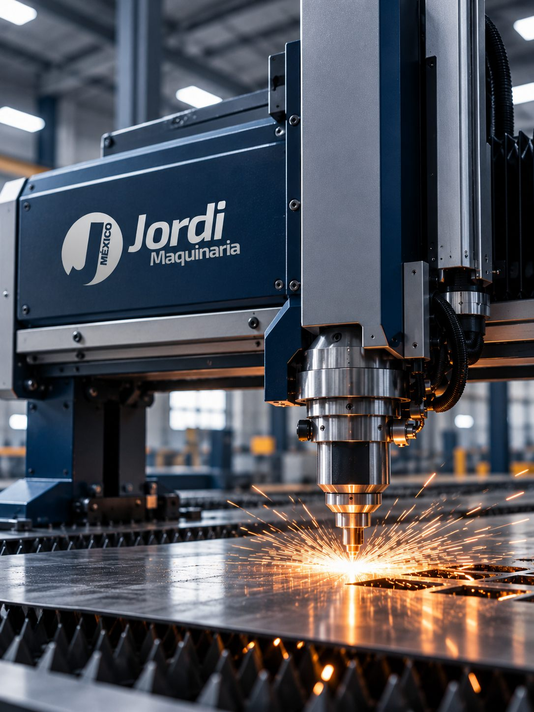
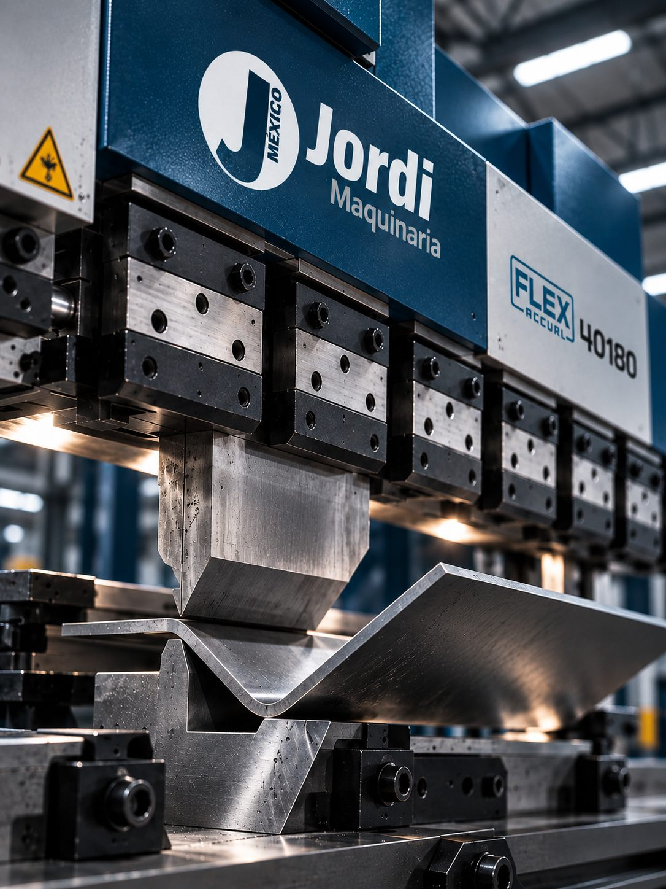
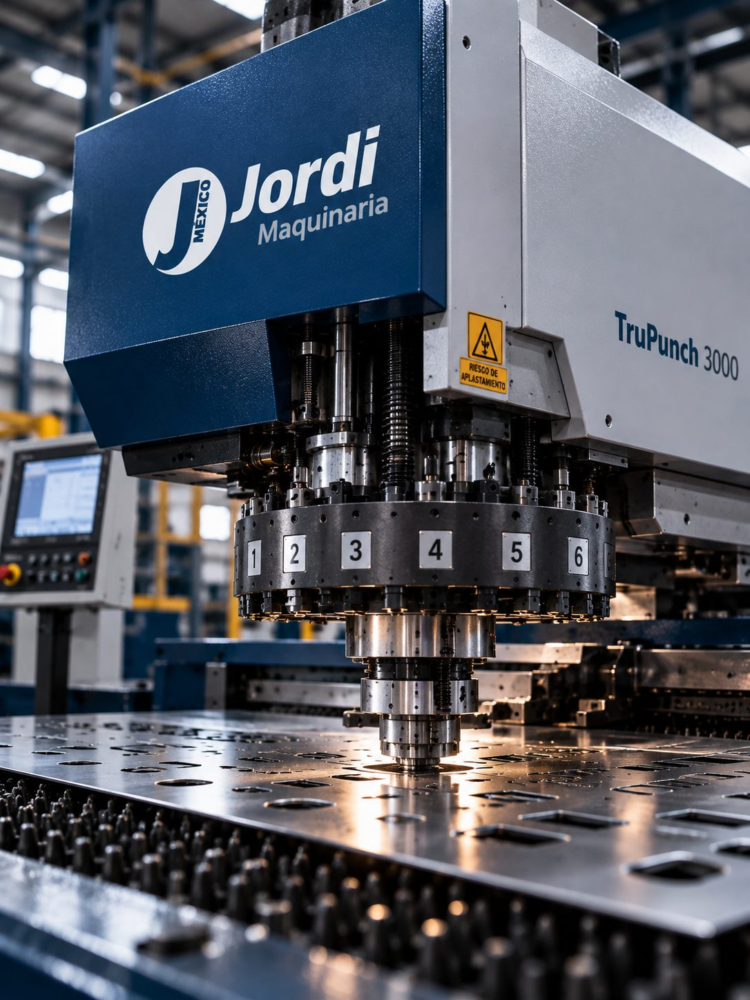
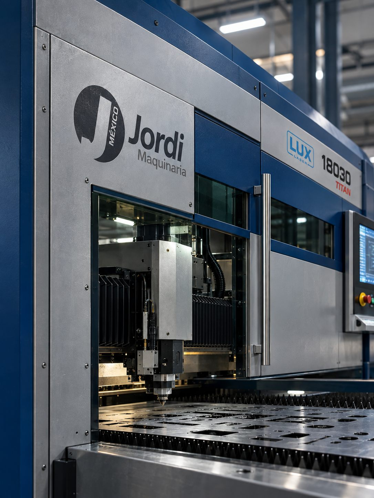

Industrial machinery
Transform metal into big ideas
Cutting, bending and stamping solutions for a more competitive industry in Mexico.
- Laser
- Band saws
- Circular saws
- Shears
- Waterjet
- Press brakes
- Plate rolls
- Section benders
- Punching machines
- Presses
- Press feeders
Our equipment
Technology for every need
A selection of high-performance machinery, backed by the world's best brands.
View full catalog →


Quality / Origin
European quality
that makes the difference
At Jordi Maquinaria we deliver industrial solutions built to the highest European standards of quality, precision and durability. Technology engineered to meet the real demands of manufacturing.
- Technology Latest-generation solutions
- Precision Consistent results in every process
- Quality Manufacturing to European standards
- Experience Technology applied to real industry
About Jordi
Over 50 years moving industry forward
Experience, precision and a specialized team to take every project further.
- +50
- years of experience
- +100
- clients in Mexico
- +1,000
- machines installed
- Specialized advice
- High-performance brands
Experience
that transforms
metal
-
01
Public lighting
Technology for structures that last
With Jordi Maquinaria technology, public-lighting manufacturers can take the production of brackets, columns and lamp posts to a more precise, flexible and efficient process.
Our fiber laser cutting solutions make it possible to work metal structures with high levels of precision, helping to obtain finished products with greater strength and durability.
We have extensive experience in this type of application and understand the demands of manufacturing components meant to stay exposed and perform for years.
Fiber laser cutting technology helps optimize different manufacturing stages of the elements used in public lighting. The precision of the process makes it easier to produce complex geometries and cuts, while the flexibility of the technology allows it to adapt to different designs and production needs.
With Jordi Maquinaria technology, manufacturers can rely on solutions aimed at improving the flexibility of the production process, optimizing manufacturing times and achieving components with precise, consistent finishes.
From brackets and columns to different configurations of lamp posts and metal structures, our solutions are designed to meet the sector's real manufacturing needs.
-
02
Automotive industry
Precision for an industry that allows no errors
The automotive industry demands precision, speed and consistency in every component. With Jordi Maquinaria technology, laser cutting becomes a solution capable of meeting the demands of one of the most advanced industries in the world.
Our solutions can be used both for sheet-metal processing and for manufacturing components and parts intended for the vehicle interior.
The automotive industry is one of the sectors where the precision of the manufacturing process matters most.
With Jordi Maquinaria technology, companies can use fiber laser cutting solutions for different applications within the production process, from sheet-metal processing to the manufacture of components intended for the vehicle interior.
The precision and consistency of laser cutting make it possible to obtain defined geometries and uniform finishes, characteristics that are especially important when working with components that must later be integrated into more complex systems and structures.
Our technology is aimed at manufacturers looking to improve the efficiency of their processes and rely on a flexible solution capable of adapting to different production needs.
-
03
Aeronautics & aerospace
Technology for processes where precision changes everything
In the aeronautics and aerospace industry, every component is subject to extraordinary demands. Jordi Maquinaria provides cutting technology designed to support industrial processes where precision, quality and flexibility are essential.
More than supplying machinery, we support every client in finding the right technological solution for their manufacturing process.
The aeronautics and aerospace industry is one of the most technically demanding manufacturing environments.
With Jordi Maquinaria technology, our goal is to adapt the possibilities of laser cutting to the specific needs of each process and application.
From our commercial and technical department, we support our clients while defining the solution, analyzing material characteristics, geometries, production volumes and the specific needs of each project.
Continuous investment in technology and development lets us expand the possible applications of laser cutting and offer solutions capable of meeting ever more demanding industrial processes.
Because in high-precision sectors, technology should not limit the process: it should make it possible.
-
04
Elevators & lifts
Precision that becomes efficiency
Elevator manufacturing requires precise, uniform and consistent components. With Jordi Maquinaria technology, fiber laser cutting makes it possible to process materials such as stainless steel with high precision and speed, reducing times and optimizing production costs.
Elevator and lift manufacturers need processes capable of maintaining high levels of precision and uniformity in every component.
Fiber laser cutting offers a particularly suitable solution for this type of manufacturing, where stainless steel plays a key role and cut quality has a direct impact on the final result.
With Jordi Maquinaria technology, it is possible to process materials with great speed and precision, optimizing manufacturing times and reducing the costs associated with the process.
As it is a contactless cutting process, the risk of material deformation is minimized and high consistency is achieved across the manufactured parts.
The result is a more flexible, fast and efficient process, capable of adapting to different designs and production needs.
-
05
Agricultural industry
More speed for an industry that never stops
Agricultural machinery needs components that are strong, precise and able to withstand demanding manufacturing processes. Jordi Maquinaria provides fiber laser cutting technology to speed up production, improve efficiency and optimize manufacturing costs.
The evolution of the agricultural industry has led machinery and equipment manufacturers to adopt increasingly advanced technological processes.
In this context, fiber laser cutting makes it possible to process metal parts with great precision and speed, becoming a strategic tool for improving manufacturing processes.
With Jordi Maquinaria technology, manufacturers can work steel parts of different thicknesses and optimize both the speed and the efficiency of the cutting process.
In applications where steel parts of roughly 4 to 6 mm are commonly processed, laser technology can be an efficient alternative to other cutting systems, helping reduce manufacturing times and optimize costs.
The combination of speed, precision and flexibility makes it possible to meet the needs of an industry that has to produce more, better and ever more efficiently.
-
06
Urban furniture
Design and precision to transform public space
Urban furniture demands functionality, strength and design. With Jordi Maquinaria technology, laser cutting makes it possible to turn metal sheet into precise components to create benches, railings, safety barriers and various elements for public space.
Laser cutting opens new possibilities for transforming metal products intended for urban furniture.
The precision and flexibility of the process make it possible to produce different geometries and cutting patterns to manufacture components used in benches, railings, safety barriers, protective elements and other metal structures.
With Jordi Maquinaria technology, manufacturers can work different materials and thicknesses, adapting the process to the specific characteristics of each project.
Our machines can make cuts of up to 25 mm in steel, 20 mm in stainless steel and 15 mm in aluminum, expanding manufacturing and design possibilities.
The result is a technology capable of turning a piece of sheet metal into a functional, precise component, ready to become part of the urban environment.
Let's talk about your project
Our team of specialists is ready to advise you and offer the best solution.